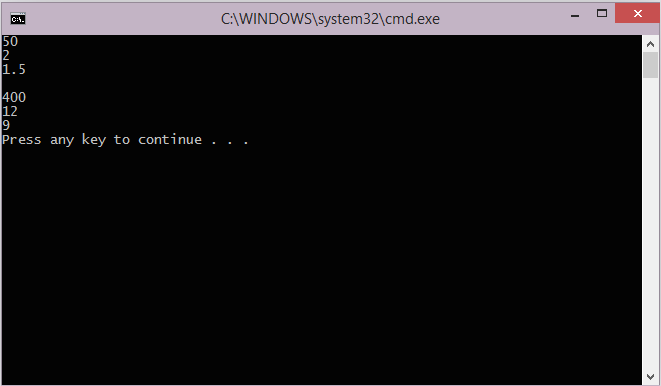

Duration
15 minutes
Lab goals
Here you will complete the implementation of a RoadTrip class that you began in Part 1.
This part adds fields to the class which are used to calculate metrics for your journey.
The high-level goals for the exercise are listed below:
- Implement three fields to hold miles, hours elapsed and gallons used in our
RoadTripclass. All of these fields are of typedouble. - Add code into the
Mainmethod to use theRoadTripclass and output the value of the fields.
Below is sample output from the finished application.
Required assets
The provided Exercise 2 folder contains resources that you will need in order to complete the lab:
- The Part2.Start folder contains a starter solution you can use if you did not complete the previous exercise, or if you would like to begin with a fresh project.
- The Part2.Completed folder contains a completed version of the lab you can use to check your work.
Please make sure you have this folder before you begin.
Steps
Below are the step-by-step instructions to implement the exercise.
Implement the RoadTrip fields
In this section, you will add data fields inside the RoadTrip class.
- Open the RoadTrip.cs file in your IDE.
- Make the
RoadTripclasspublic, this is always a good idea if you plan to use the class in other places. -
Inside the
RoadTripclass, add three fields to store information about your journey:Miles,HoursElapsed, andGallonsUsed. All the fields should bepublicso they can be accessed from other code such asMain. All the fields should be of typedoubleso they can store floating-point values.
Implement the Main program
This section asks you to write code to create objects and access their fields.
-
Open the file Program.cs. You will be adding code to the
Mainmethod insideMainClass. -
Create two
RoadTripobjects using thenewoperator (see below for a sample showing the creation of one of the two objects). Name themchoresandvacation. You need these objects because they contain the fields you will use to store information about each trip. EachRoadTripobject gets its own copy of all the fields.RoadTrip chores = new RoadTrip();
-
Load values of your choice into each of the fields of the two
RoadTripobjects. Since you have 2 objects with 3 fields each, this will require 6 assignments. The code below shows a sample for 1 of the 6 assignments you will need.chores.Miles = 50.00;
-
Add
Console.WriteLinecalls to print all fields of the two objects. This requires 6 calls toConsole.WriteLine, but it is a useful exercise since it shows you that each object has its own copy of all the fields. That is, thechoresobject and thevacationobject are independent, they each store their own data. The code below shows a sample for 1 of the 6Console.WriteLinestatements you will need.Console.WriteLine(chores.Miles);
- Run the program to test your work.
-
[Optional] If you have time, try changing the
Milesfield frompublictoprivate. Build your project and see what happens. You should get error messages where theMainmethod attempts to accessMiles. We will explore this idea more in a future session; for now, please return the access level topublic.
Summary
In this lab, you added to your RoadTrip class a few fields to store data values and then wrote some code to utilize that data.